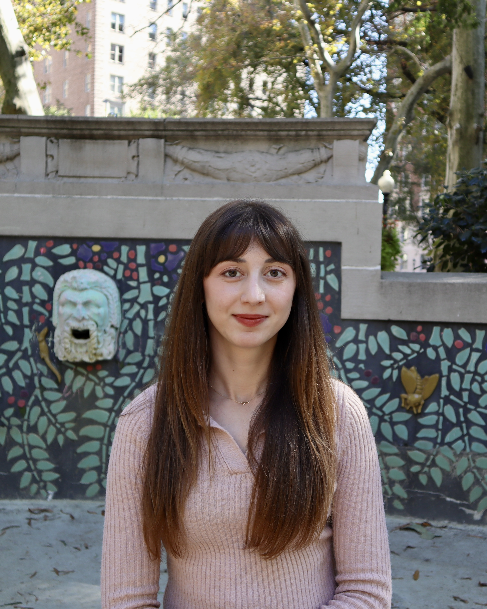

I believe good design starts with understanding people. My goal is to create clear, useful, and accessible experiences by listening to users, solving real problems, and always learning along the way. I value teamwork, empathy, and thoughtful design that makes life easier.
This portfolio was created as part of INFO 552: Introduction to Web Design for Information Organizations course at Drexel University. It aims to present my web design skills.